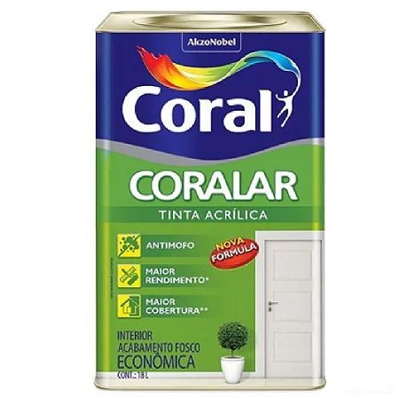
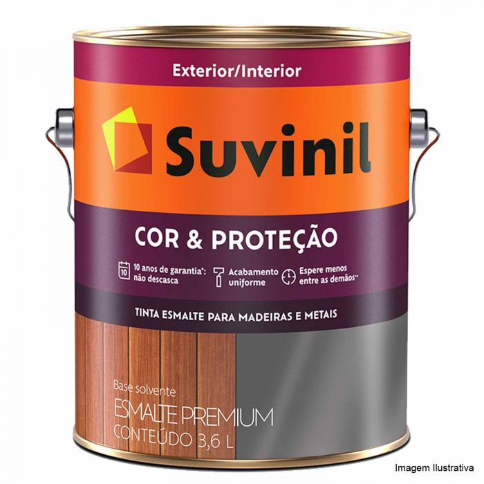

Tinta acrílica
Ideal para paredes de alvenaria, a tinta acrílica funciona bem em ambientes internos e externos. Existem três acabamentos disponíveis: acetinado, semi-brilho e fosco. O material é de fácil lavagem, basta um pano úmido para fazer a higienização diminuindo a necessidade de manutenção.
Tinta esmalte
Usada para superfícies de madeira e de metal, a tinta esmalte é mais resistente e tem tempo maior de secagem. Geralmente feita à base de óleo, costumam ser indicada para portas, rodapés, mobiliário e corrimões.
